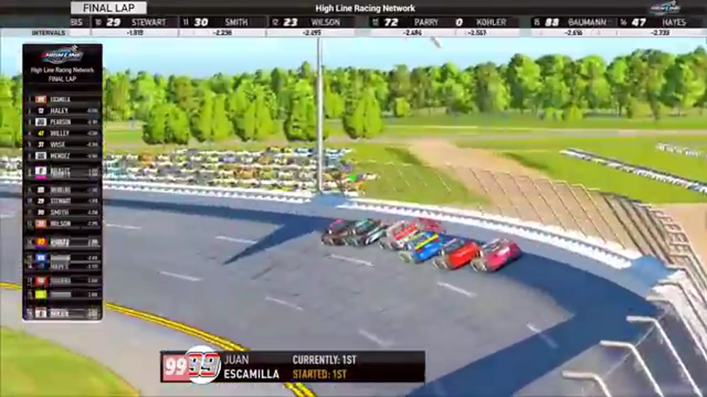

Juan Escamilla
Darkhorse Racing
4 RECOVERED WINS / EVERY ONE RECEIPTED
- Official files
- 19
- Central editions
- 6
- Exact tape cues
- 42
- Accepted podiums
- 5
Juan Escamilla's accepted HLRN result file contains 4 supported feature wins and 5 recovered podiums: S1 R9 at Chicagoland (P1); S1 R8 at Talladega (P1); S1 R5 at Watkins Glen (P1); S1 R4 at iRacing Superspeedway (P1); S1 R2 at Homestead-Miami (P3). HLRN materials currently associate the file with Darkhorse Racing. The currently indexed source window runs from November 17, 2025 through July 20, 2026.
The searchable official-broadcast footprint covers 19 race files, with the heaviest repeated track signal at Daytona. 6 Highline Central editions and 42 primary-race jump points connect the result ledger back to the tape. The densest direct-tape categories are restart (9 cues) and stage (7 cues). Those counts describe where the name is easiest to find; they are not fault, pace, or performance grades. A source-attributed car frame is published with its original video and timestamp. That is the current discovery map for Juan Escamilla.
No unsupported start total, full points total, car number, or finishing position is added around those receipts. The dossier grows from accepted results and source appearances, not from broadcast-name volume. Separately, 6 Highline Live files sit on the bonus shelf and never enter the official season ledger. The displayed name is labeled transcript normalized; that status remains visible so an owner roster can strengthen or correct the identity without rewriting the evidence trail. Those boundaries define Juan Escamilla's public HLRN file.
10 featured race-tape cues
These are discovery routes into complete HLRN broadcasts, not performance grades or inferred results.
- S1 / R9 · RESULT
Juan Escamilla is confirmed atop the Chicagoland results
The Chicagoland results readout lists Juan Escamilla first and Trevor Haley third. The P2 driver then enters the booth under the scoring-name rendering 'Stewart,' self-identifies as Joe Quan, and is repeatedly congratulated for second place.
Chicagoland - S1 / R8 · RESULT
Juan Escamilla is confirmed atop the Talladega results
The primary Talladega results readout records Juan Escamilla first, Justin Lee Pearson second, and James Mendez third after the photo finish.
Talladega - S1 / R4 · RESULT
Juan Escamilla is confirmed atop the iRacing Superspeedway results
The iRacing Superspeedway broadcast's closing readout records Juan Escamilla first, Trevor Haley second, and Randy Showers third.
iRacing Superspeedway - S1 / R2 · RESULT
Ethan Moreno is confirmed atop the Homestead-Miami results
The Homestead broadcast's closing readout and interviews record Ethan Moreno first, Francisco Bacayo second, and Juan Escamilla third.
Homestead-Miami - S1 / R5 · FINISH
Juan Escamilla reaches the Watkins Glen checkered
S1 / R5 at 1:39:00: The primary tape calls Juan Escamilla at the Watkins Glen checkered and carries the first replay of the finish. The result label is tied to the accepted ledger.
Watkins Glen - S1 / R4 · FINISH
Juan Escamilla's high lane overtakes Trevor Haley at the stripe
Trevor Haley takes the white flag in front, but Juan Escamilla advances on the high side in the final run. The booth then receives the Escamilla winner indication and begins its photo-finish review.
iRacing Superspeedway - S1 / R2 · FINISH
Ethan Moreno and Juan Escamilla enter the final-lap decision
S1 / R2 at 1:31:05: The white flag opens the final-lap decision at Homestead-Miami, with Ethan Moreno and Juan Escamilla named in the decisive group. The cut continues through the immediate finish call on the full primary broadcast.
Homestead-Miami - S1 / R9 · STAGE
Stage 2 winner call at Chicagoland
S1 / R9 at 1:22:13: The broadcast enters a stage-scoring discussion at Chicagoland with Juan Escamilla and Dylan Row in the scoring call. The clip preserves the on-air timing or points call without promoting it into a complete stage result; the accepted feature result ledger remains separate.
Chicagoland - S1 / R8 · STAGE
Nick Bowman takes Talladega Stage 1 through an early wreck
Cars begin spinning as lap 20 arrives, but Nick Bowman reaches the Stage 1 line first. The scheduled caution follows while HLRN restarts its timing display and prepares the next pit cycle.
Talladega - S1 / R6 · STAGE
Stage 1 winner call at Las Vegas
S1 / R6 at 1:12:29: The broadcast enters a stage-scoring discussion at Las Vegas with Trevor Haley, Juan Escamilla, and Ethan Moreno in the scoring call. The clip preserves the on-air timing or points call without promoting it into a complete stage result; the accepted feature result ledger remains separate.
Las Vegas
Recent editions connected to Juan Escamilla
Brown Survives Daytona
A final-lap wreck removed the front group and opened the lane for Matt Brown, Ryan Wilson, and Ricky Miles.
S1 / R9Escamilla Closes Chicagoland
Brandon Showers and Juan Escamilla divided the stages before the points leader took command of the final run.
S1 / R8Escamilla Wins Through the Wreck
A last-lap crash split the pack, and Juan Escamilla held Justin Lee Pearson by a nose in the first true photo-finish file of Season 1.
S1 / R5Escamilla Controls the Glen
Juan Escamilla won the stage and the race, Trevor Haley followed him home, and Jacob Brown completed the recovered podium.
S1 / R4Escamilla Takes the Superspeedway
James Smith and an uncertain second-stage scorer set the table before Juan Escamilla displaced teammate Trevor Haley in the final run.
S1 / R2Moreno Takes Over Homestead
Juan Escamilla and Bryce Hinton split the stages before Ethan Moreno turned his Highline debut into a feature win.
Complete starts, finishes, and points remain open beyond the recovered results. Name normalization remains reviewable against owner records.